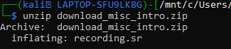
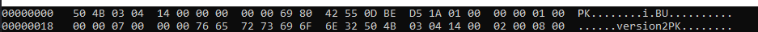
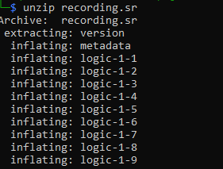
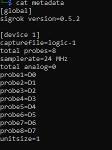
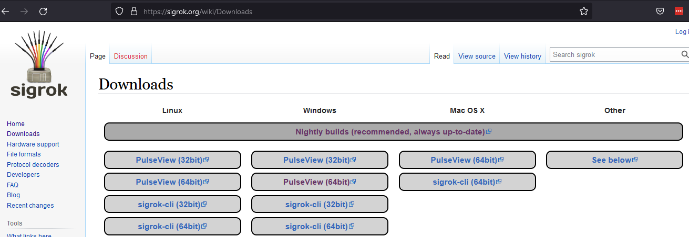
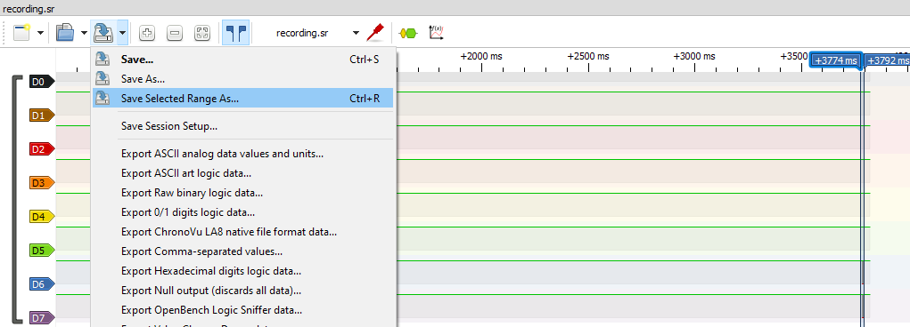
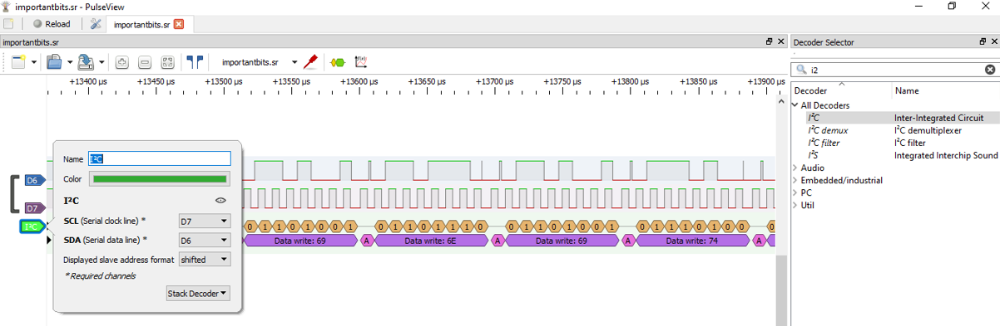
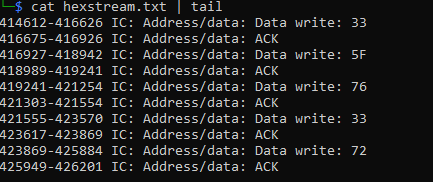
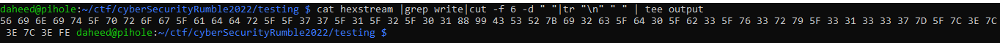
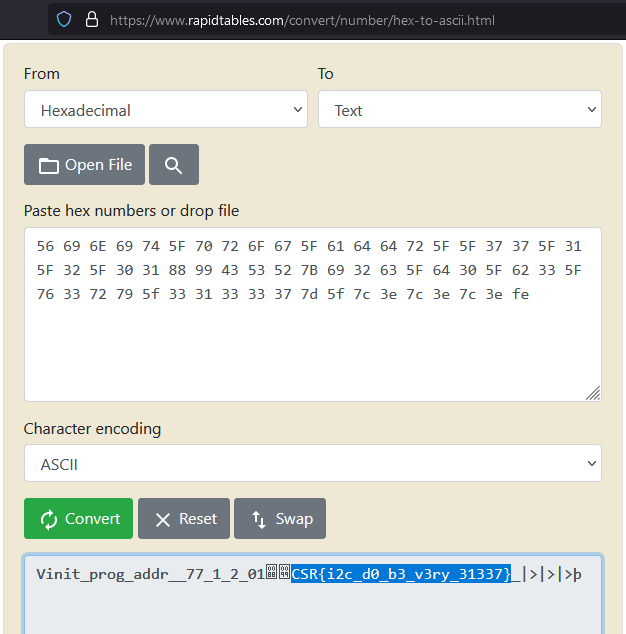

Miscmeplx
In miscmeplx we are given a file to download which comes to us as download_misc_intro.zip
After running unzip the file is now recording.sr

Next I looked at the recording.sr file with hexedit and the magic number headers identified it as a PK zip file.

So I unzipped this file as well.

Next I looked at the file called metadata inside was what type of file this is. It is a logic probe recording from a program called sigrok. This was much more helpful than when googling what is a .sr file that pointed me to Sega Genesis console games.

I then searched for sigrok 0.5.2 and landed on their download page. The program is available across multiple platforms in GUI or CLI.

Initially after opening up the recording.sr file with sigrok it didn't look like much except for in leads D6 and D7 there was a little blip on the right. I noticed a selection tool and zoom function so I selected this blip and began zooming in.

I found this YouTube video as an intro to sigrok and used it to isolate the D6 and D7 leads.
https://www.youtube.com/watch?v=z8Tdz7eQ8n4
Also, how to apply the logic interpreter. This evaluates the signal to what looks like hex values.

Right clicking on the I2C Address/data and selecting "Export all annotations" I saved the data to a file called hexstream.txt
The output of the hexstream.txt file:

Copied and pasted this into a linux machine to manipulate the data.
Cat hexstream | grep write: | cut -f 6 -d " " |tr "\n" " " | tee output

I then put this output into a hex to ascii converter. I tried using xxd -r but it would break before finishing the conversion.
